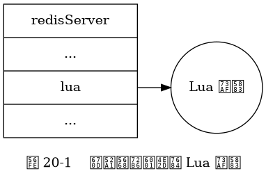

第 20 章： Lua 脚本¶
创建并修改 Lua 环境¶
服务器与 Lua 环境。

Lua 环境协作组件¶
Lua 脚本执行 Redis 命令时的通讯步骤。
![digraph {
label = "\n图 20-2 Lua 脚本执行 Redis 命令时的通讯步骤";
rankdir = LR;
node [shape = record, height = 2.0];
splines = polyline;
//
lua [label = "L\nu\na\n环\n境"];
fake_client [label = "伪\n客\n户\n端"];
eval [label = "命\n令\n执\n行\n器"];
lua -> fake_client [label = "1) 传送 redis.call 函数\n想要执行的 Redis 命令"]
fake_client -> eval [label = "2) 将命令传给执行器执行"];
lua -> fake_client [dir = back, label = "\n4) 将命令结果传回给 Lua 环境"];
fake_client -> eval [dir = back, label = "\n3) 返回命令的执行结果"];
}](_images/graphviz-59485c9f0d45aaf8bc9aa5340a517b4045899a75.png)
作为例子， 图 20-3 展示了 Lua 脚本在执行以下命令时：
redis> EVAL "return redis.call('DBSIZE')" 0
(integer) 10086
Lua 环境、伪客户端、命令执行器三者之间的通讯过程。
![digraph {
label = "\n图 20-3 Lua 脚本执行 DBSIZE 命令时的通讯步骤";
rankdir = LR;
node [shape = record, height = 2.0];
splines = polyline;
//
lua [label = "L\nu\na\n环\n境"];
fake_client [label = "伪\n客\n户\n端"];
eval [label = "命\n令\n执\n行\n器"];
lua -> fake_client [label = "1) 传送 DBSIZE 请求"]
fake_client -> eval [label = "2) 将 DBSIZE 命令传给执行器执行"];
lua -> fake_client [dir = back, label = "\n4) 将命令结果 10086 传回给 Lua 环境"];
fake_client -> eval [dir = back, label = "\n3) 返回命令的执行结果 10086"];
}](_images/graphviz-b98b5f51b1bfa0562666db9058fd4c72c3448f74.png)
lua_scripts 字典示例。
![digraph {
label = "\n 图 20-4 lua_scripts 字典示例";
rankdir = LR;
node [shape = record];
//
lua_scripts [label = "lua_scripts | ... | <1> \"2f31ba2bb6d6a0f42cc159d2e2dad55440778de3\" | <2> \"a27e7e8a43702b7046d4f6a7ccf5b60cef6b9bd9\" | <3> \"4475bfb5919b5ad16424cb50f74d4724ae833e72\" | ... "];
node [shape = plaintext];
one [label = "\"return 'hi'\""];
two [label = "\"return 1+1\""];
three [label = "\"return 2*2\""];
lua_scripts:1 -> one;
lua_scripts:2 -> two;
lua_scripts:3 -> three;
}](_images/graphviz-fdd33d90fe87050eceb96e448c0ad4832587a045.png)
脚本管理命令的实现¶
带有超时处理钩子的脚本的运行过程。
![digraph {
label = "\n图 20-8 带有超时处理钩子的脚本的执行过程";
node [shape = box];
start_script [label = "开始执行脚本", width = 3.5];
finish_or_not [label = "脚本执行完毕？", shape = diamond];
finish [label = "返回执行结果"];
overtime_or_not [label = "定期调用钩子\n检查脚本\n是否已超时运行？", shape = diamond];
kill_or_shutdown_arrive_or_not [label = "有 SCRIPT KILL\n或者\nSHUTDOWN NOSAVE\n到达？", shape = diamond];
stop_script [label = "执行 SCRIPT KILL \n 或者 SHUTDOWN"];
keep_running [label = "继续执行脚本"];
//
start_script -> finish_or_not;
finish_or_not -> finish [label = "是"];
finish_or_not -> overtime_or_not [label = "否"];
overtime_or_not -> kill_or_shutdown_arrive_or_not [label = "是"];
overtime_or_not -> keep_running [label = "否"];
kill_or_shutdown_arrive_or_not -> stop_script [label = "是"];
kill_or_shutdown_arrive_or_not -> keep_running [label = "否"];
keep_running -> finish_or_not;
}](_images/graphviz-9693becb196f292d692ecc4e27dab93a5cf196f1.png)
脚本复制¶
将脚本命令传播给从服务器。
![digraph {
label = "\n 图 20-9 将脚本命令传播给从服务器";
rankdir = LR;
//
node [shape = circle, width = 1.0];
client [label = "客户端", width = 1.3];
master [label = "主服务器", width = 1.3];
slave1 [label = "从服务器 1"];
slave2 [label = "从服务器 2"];
more [label = "...", shape = plaintext];
slaveN [label = "从服务器 N"];
//
edge [label = "EVAL \n 或者 \n SCRIPT FLUSH \n 或者 \n SCRIPT LOAD"];
client -> master;
master -> slave1;
master -> slave2;
master -> more;
master -> slaveN;
}](_images/graphviz-fd6d5be5203d0c4e4e7f7d2689e2fc4b3853a8ca.png)
主服务器判断该传播 EVAL 命令还是 EVALSHA 命令的流程。
![digraph {
label = "\n 图 20-12 主服务器判断传播 EVAL 还是 EVALSHA 的过程";
node [shape = box];
command [label = " 主服务器在本机执行完命令 \n EVALSHA <sha1> <numkeys> [key ...] [arg ...] "];
sha1_exists_in_scriptcache_or_not [label = "校验和 sha1 是否存在于 \n repl_scriptcache_dict 字典？", shape = diamond];
propagate_evalsha [label = "传播 \n EVALSHA <sha1> <numkeys> [key ...] [arg ...]"];
convert_evalsha_to_eval [label = "将 EVALSHA 命令转换成等价的 EVAL 命令"];
propagate_eval [label = "传播 \n EVAL <script> <numkeys> [key ...] [arg ...]"];
add_sha1_to_scriptcache [label = "将 sha1 添加到 \n repl_scriptcache_dict 字典"];
//
command -> sha1_exists_in_scriptcache_or_not;
sha1_exists_in_scriptcache_or_not -> propagate_evalsha [label = "是"];
sha1_exists_in_scriptcache_or_not -> convert_evalsha_to_eval [label = "否"];
convert_evalsha_to_eval -> propagate_eval;
propagate_eval -> add_sha1_to_scriptcache;
}](_images/graphviz-61b55debb7b0e95a105c750820fb6391ca3e4ae6.png)